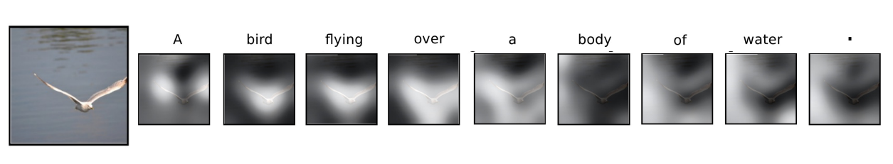
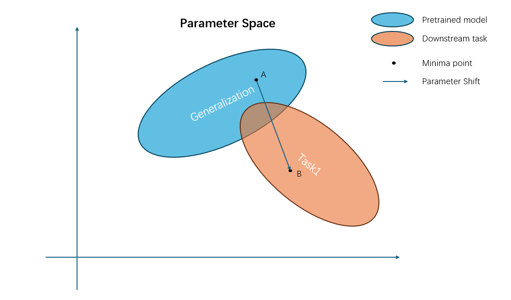
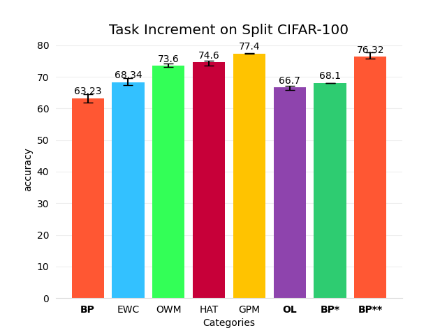

从持续学习看特征学习
Continual Learning：学会“记住”。
Feature Learning：学会“理解”。
我一直很好奇的一件事是：是什么让神经网络如此强大？其中一个子问题就是：神经网络到底学到了什么？
一个常被拿来举例的现象是自注意力（self-attention）：

在生成单词时，模型会把注意力集中在图像中的不同区域，有点像人类在看图时会不自觉聚焦在关键部分。
但所有模型都像这样学习吗？
首先，我们要想起模型在做什么：它们在做特征提取（feature extraction）——剔除无关噪声，只保留“有用信息”。这些有用的信息最后会被送入全连接层（fc），作为分类器的一部分，用来学习“特征到标签”的映射。
一个有趣的现象
我在学校上一门与 AI 相关的课程时，有一个项目是：
在我们自己采集的数据集上做图像分类。
数据集质量非常差，分布也很糟糕。比如：一个易拉罐可能被标成“金属”“垃圾”，甚至如果里面装着过期药品，还会被标成“有害垃圾”。姑且称之为 UESTC 数据集吧。
一开始，模型在这个数据集上几乎学不出什么有意义的东西，我也果断把锅全甩给了数据集。直到几天后，一个朋友告诉我，他用在 ImageNet 上预训练过的模型做迁移学习（transfer learning），在这个数据集上居然能做到 80% 左右的精度。
这立刻引起了我的兴趣：
- 通过简单的迁移学习技巧，
- 预训练模型在 UESTC 这种糟糕的数据上也能有不错表现，
显然，ImageNet 上的预训练让模型学会了更加“通用”的特征，而不是只记住特定数据集上的细枝末节。
现在我会把这种现象称为特征学习（feature learning）。在我看来，迁移学习的核心之一就是特征学习：
- 老师模型先在高质量数据集上预训练，
- 学会如何提取对下游任务普适、有用的特征，
- 然后把这些参数迁移到下游任务上做微调。
这相当于把梯度下降的“起点”设在了一个更好的位置，对整个优化过程和最终性能都会有重要影响。
自然地，我也想反过来试：
- 如果我先在 UESTC 这种“脏数据”上训练，
- 再拿这个模型去做 ImageNet，
- 会不会也得到某种形式的“泛化增强”？
结果当然是失败的：
模型在 UESTC 上训练之后，几乎完全忘记了它在 ImageNet 上学到的东西， 严重过拟合在 UESTC 数据上。
持续学习（Continual Learning）
可见，上面这种“先预训练再微调”的方式，只会提升模型在某一个特定数据集上的表现。一旦我们在下游任务上继续训练，参数空间就会朝新的方向移动，原本的泛化能力会被不断侵蚀——大致可以用下图来想象：

如果我们希望模型既能学习新的任务，又不忘记旧任务，该怎么办？
有没有可能让参数停留在某个“甜点区域（sweet spot）”，在性能和过拟合之间取得平衡？这正是持续学习（continual learning）要解决的问题。
所谓持续学习，大致就是缓解“灾难性遗忘（catastrophic forgetting）”：
模型在训练新任务时，会严重遗忘旧任务的能力。
另一个相关概念是 终身学习（lifelong learning）：
理想情况下，模型应该像人类一样，可以终身学习， 持续吸收新知识，同时保留最重要的旧知识。
下面简单介绍几类常见的持续学习方法：
- 加约束（Regularization-based）：如 EWC、OWM、GPM
- 在损失函数中对参数加各种约束；
- 约束可以与参数的均值、梯度、方差等相关；
-
目标是让新的梯度下降轨迹尽量避开对旧任务“关键”的方向。
-
拆模型（Architecture-based）：如 HAT
- 通过结构上的“切分”给每个任务分配一部分模型；
- 等价于为不同任务开辟不同“子网络”；
-
从短期来看，这确实能避免遗忘，但从终身学习的角度看，不可持续：
- 模型总有“被分完的一天”。
-
记忆池（Replay-based）：如 A-GEM
- 维护一个额外的记忆池，存一些旧任务的数据或梯度；
- 训练时不时回放这些样本，让模型“复习”旧知识。
特征学习的惊人表现
在继续之前，我想先声明：这部分更多是个人视角，也可能比较幼稚。 也许我并没有完全抓住持续学习的精髓，也许未来我会改变这些看法。 但就算是现在的想法不够成熟，我仍然觉得值得记录下来。
持续学习吸引我的地方，在于它的动机——如何学会“记住”。
如果我们希望模型不再灾难性遗忘，理想做法应该是：
- 学到数据的“共性结构”，而不是死记细节；
- 类似人类那样“理解”规律，而不是“死背”样本。
人不会记得前几天每一顿具体吃了什么，但会长期保留学到的知识； 我们知道该把注意力放在什么上，不该浪费在什么上； 我们知道如何从杂乱的信息里提炼有价值的部分。
但是，前面提到的许多持续学习技术，其实并没有显式地讨论“特征层面的信息蒸馏”。 它们更多是在优化层面减少任务间冲突：
- 让每一步梯度更新“别太伤害旧任务”；
- 而不是直接去塑造“更好的特征空间”。
这是一把“双刃剑”：
- 在某些设定下，确实能带来收益；
- 但至少在一些常见基准（如 split-CIFAR100、P-MNIST）上， 这些 fancy 方法并不总是比“朴素的 BP”好。
为什么我会这么说？因为传统 BP 本身就不算太差。

图中：
- BP*：每个任务训练后，保存验证集精度最高的那个 checkpoint；
- BP**：冻结特征提取器（分类器前面的所有层）， 只为每个任务训练一个新的全连接分类头；
- OL：一种自底向上的、带无监督“正交损失”的训练方式。
这些结果在 5 个随机种子下重复实验，波动范围可接受， 因此大致可以给出一些定性的结论：
尽管 BP 在持续学习中很不稳定（有些种子会完全忘光旧任务）， 但它的一些“变体”能达到非常不错的性能。
那为什么 BP** 能这么强？
关键在于：本质上，BP** 其实已经“不是传统意义上的持续学习”了：
- 对每个新任务，只训练一个单独的全连接分类层；
- 特征提取器的参数被完全冻结；
如果从特征学习的角度看：
- 任务 1 的训练相当于一次“预训练”；
- 后续任务则是“下游任务”；
- 任务 1 上学到的特征会被后续所有任务共享。
这几乎就是一个标准的“预训练 + 微调”范式，只不过预训练数据不是 ImageNet，而是第一个任务对应的数据。
📌 这也是为什么我会说：
“短期的持续学习”其实意义有限——因为 BP 本身已经足够好了， 甚至在某些设定下能超越像 HAT 这样的专门方法。
那 OL 呢？为什么一个看起来“怪怪的损失函数”能取得还不错的结果？
原因在于，正交损失本质上是一种特征学习：
- 回头看正交损失的定义：
给定某一层的输出矩阵 \(Y\)， 正交损失鼓励 \(Y\) 的“核”尽可能接近单位矩阵， 等价于提高输出特征的“秩”和信息量。
换句话说，它想让模型学到：
- 尽可能多保留输入信息；
- 让特征空间的“维度利用率”更高；
- 再把这种“富含信息的表征”交给后续分类器来完成任务。
这与 PCA 之类的降维方法的思想很接近：
在降维的同时，尽量保留尽可能多的信息。
不过，这套思路更多是在任务增量学习（task-incremental）下有效。 一旦切换到 类别增量学习（class-incremental）：
- 分类器本身变成瓶颈；
- BP 和 OL 都会彻底崩盘；
即便如此，“特征学习优先”的原则依然没有改变。
在像 permuted-MNIST 这类“人为打乱”的数据集上， 尽管原始图像几乎不存在可迁移的结构特征， BP** 依然能取得不错的结果—— 特征提取器会通过提升特征矩阵的秩，扩大参数空间，从而保留更多有用信息。
一个令人震撼但又有缺陷的方法：HAT
当我第一次实现 HAT 的时候，它的表现让我非常震惊：
它“几乎不会忘记”。
但是，代价也很明显：
- 它与 BatchNorm 不兼容；
- 学习率必须严格控制在 5e-2 这样很窄的范围内；
- 一个对其他方法来说很正常的玩具模型， 想让它在 HAT 下工作，就得做很多特殊改动。
这一点严重限制了 HAT 在更大模型上的可扩展性。
更根本的问题在于它的架构设计：
- 模型几乎被切分成若干块，每一块负责一个任务；
- 推理时，只会激活与当前任务相关的那一小部分参数；
这确实能强力避免遗忘，但从“终身学习”的角度看：
- 如果任务数很多甚至趋近无限，这种划分方式迟早会失效。
在我们的实验中，在 split-Tiny-ImageNet 上使用 HAT 完全失败， 而同样的模型在其他方法下表现良好，这进一步说明了它的局限。
小结
我越来越相信：
一个更有前景的持续学习方向，应该更贴近人类的学习方式： 强调“理解”和“特征学习”，而不是单纯地记住每个任务的细节。
换句话说：
- 把学习的重点放在“学到什么样的特征”上，
- 而不是在损失表面上小心翼翼地走一步、退一步，
也许更有机会在真正长期、开放的学习场景中取得突破。